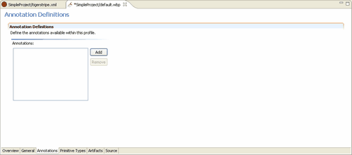

The Annotation Tab
Annotations are a way to extend the Tigerstripe model in a controlled manner. When an annotation (sometimes referred to as a Stereotype) is applied to a model element such as a method, you can specify values for each attribute of that annotation. This information can then be used in a plug-in to add information to the output, or to influence the behavior of the model.
Adding Annotations: Changing Project Behavior

To add a Profile Annotation:
- Click the Annotations tab in your Project Profile Perspective.
- Click Add.
- Name your annotation, assign a version number, and enter a short description.
- Select the scope for your annotation. This determines whether your annotation is available with the listed Artifact types.
- In the appropriate sections, enter Attributes for your annotation and Required Annotations or Excluded Annotations, if any.
- Save your Project Profile.
Before your changes become available with your Tigerstripe project, you must deploy your Tigerstripe Profile. For more information about deploying your Tigerstripe Profile, refer to Deploying your Profile.
Each annotation has the following properties:
- Name: The name of the annotation. This the name presented when using the annotation in your model.
- Version: The version number of the annotation, for maintenance purposes.
- Description: A short description of the meaning of the annotation. The description is used for ToolTips when using the annotation.
- Scope: The scope of the annotation. The scope outlines any special conditions for use of the annotation in the model. You can specify multiple scopes for the same annotations. Possible values are:
- Method: The annotation can be used on any method on any artifact in the project.
- Attribute: The annotation can be used on any attribute on any artifact in the project.
- Label: The annotation can be used on any label on any artifact in the project.
- Zero or more Artifact Types: The annotation can be used on any artifact of the types checked in the project.
Note: The different scopes are not "additive", meaning you can not use an annotation on a method. It is only necessary to have the Method scope set, irrespective of whether the artifact Type is included in the scope for the annotation.
Attributes: For each annotation, optional attributes can be defined so the end-user can further specify the details of that annotation. Click Add, next to the list of attributes, to add a new attribute using the Annotation Attribute Edit dialog box. Each attribute has the following properties:
- Name: The name of the attribute. This is the name presented when using the annotation in the model.
- Description: A short description of the meaning of the attribute.
- Is Array: A check box that indicate if the attribute is an array. This option is only valid for String attributes. When you check this option, you can enter an array of values for a single attribute.
- Attribute Type: Each attribute is one of three types, and you should define a default type for each attribute. The attribute type is used when you first apply an annotation.
- String Entry: Attributes of this type can store a String (or an array of Strings) as their value.
- Checkable: Attributes of this type can have a value of True or False. The default should be set using the drop-down list box.
- List-entry: Attributes of this type can have a String value, but the range of values is restricted to the entities defined. One entry must be specified as the default value.
For more information about how to use annotations in a model, refer to Using Annotations.
Related Topics
Profile Perspectives
The General Tab
The Primitive-Type Tab
The Artifacts Tab
Deploying your Profile
Project Profiles
Rolling Back
Loading Factory Defaults
 The Primitive-Type Tab
The Primitive-Type Tab
© copyright 2005, 2006, 2007 Cisco Systems, Inc. - All rights reserved